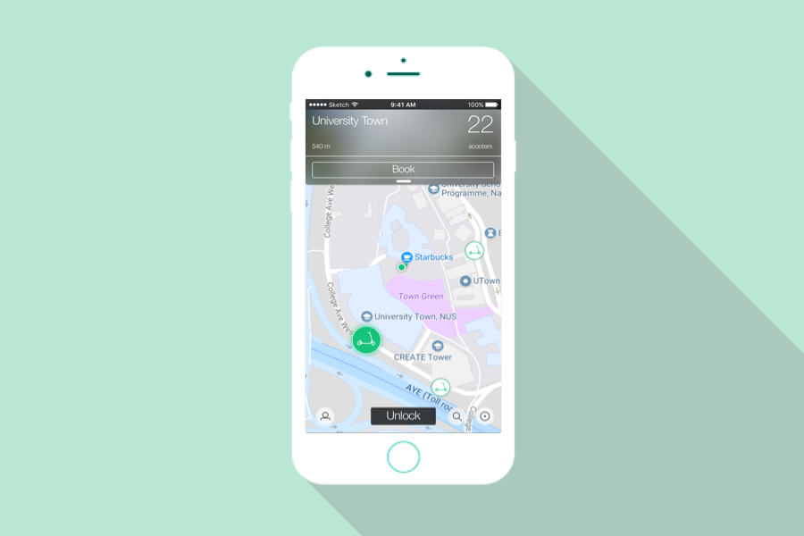
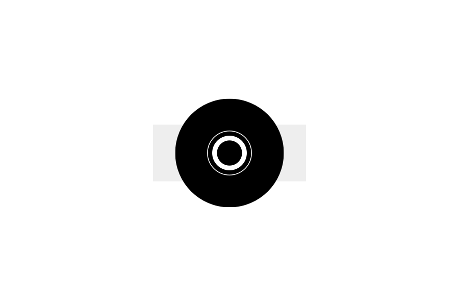
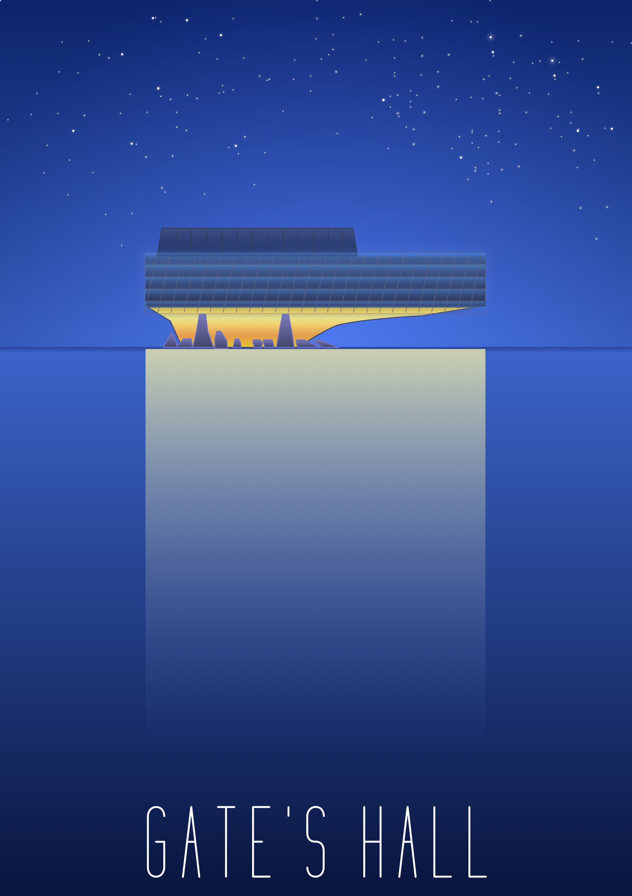
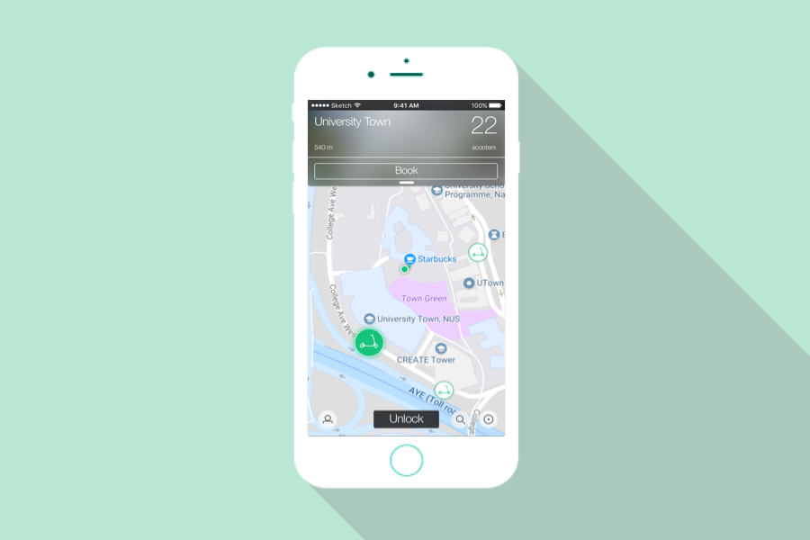
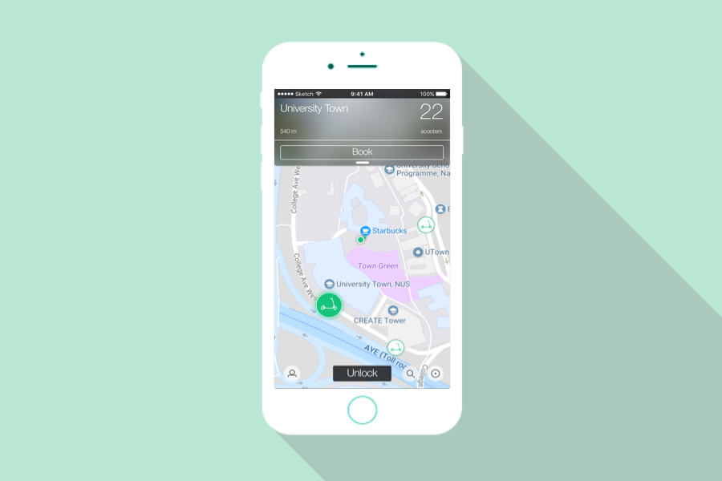

This site's contrast
is optimized for people
who has visual impairment
Designed & Coded by Chen Di

RideNUS
UI/UX Design | User Studies

Dio
UI/UX Design
Microsoft MakeCode
UX Design | Augmented Reality | Web Dev
Trac.
UI/UX Design
EDITalk
CHI 2018 Proceedings
Reindeer
UX Design | Software Engineering
Sqaure
2D Illustration | Visual Creation
Bill Splitter
UI Optimization | Cognitive Research | KLM Analysis
Autodesk Intern Proj
UI Design | Web Dev | Agile Process
Goldman Sachs Intern Proj
UI Design | Web Dev | Business Process Modeling
8 Days in Japan
Digital Media Production | Photobook | Travel Notes
Cornell Johnson School
Cornell McGraw Tower
Cornell Gate's Hall

Wuhan (City of China)
Elder Freak 2048
City of Stars
Hearts Don't Break Around Here
Roses
EDUCATION:
Cornell University | Aug 2017 - May 2018
Master of Professional Studies, Information Science & HCI
National University of Singapore | Jul 2013 - Jul 2017
Bachelor of Computing (Graduated Honor with Distinction), Computer Science & Interactive Media
EXPERIENCE:
2017: Cornell University | User Research Assistant, Wearable, Ubiquitous Computing
2017: Math & Movement | User Experience Designer Intern, Web UI
2017: Microsoft Research | Graduate Student Product Designer, UX Design, Augmented Reality, Web UI
2017: NUS-HCI Lab | Research Intern, Human-Computer Interaction, Mobile UI
2017: Thales Group | Undergraduate Researcher, Image Processing & Simulation
2016: National University of Singapore | Teaching Assistant, Computer Graphics
2016: Goldman Sachs | Summer Analyst, Operations Technology, Web UI
2015: Autodesk | Software Engineer Intern, Quality Assurance, Web UI
PUBLICATION:
"Simulating Crowd Motion Using Density Estimation and Optical Flow" WCS 2017 | Computer Graphics/Agent Based Simulation, First Author "EDITalk: Towards Mobile Eyes-free Word Processing" CHI 2018 | Human-Computer Interaction, Third Author
I'm a master student pursuing a degree in Information Science in Cornell University. My focus area of studies are Human-Computer Interaction, UI / UX Design.
Before I came to the State, I spent 4 years in a beautiful tropical island, Singapore, where I obtained my Honours Bachelor's degree (graduated with distinction) in Computer Science from National University of Singapore.
I enjoy coding as well as working with graphics. You may find me playing with Sketch while having Terminal window opened when I'm working.
I'm currently co-project with Microsoft Research on creating a platform that helps non-programmer using some of the coolest JavaScript libraries. Checkout Microsoft MakeCode if you want to know more about the project.
If you are also passionate about coding and graphics, feel free to drop me a message, I'll be more than happy to share my passion with you.
 
RideNUSUI/UX Design | User Studies

RideNUSUI/UX Design | User Studies Microsoft MakeCodeUX Design | Augmented Reality | Web Dev
Microsoft MakeCodeUX Design | Augmented Reality | Web Dev
 EDITalkCHI 2018 Proceedings
EDITalkCHI 2018 Proceedings ReindeerUX Design | Software Engineering
ReindeerUX Design | Software Engineering Sqaure2D Illustration | Visual Creation
Sqaure2D Illustration | Visual Creation Bill SplitterUI Optimization | Cognitive Research | KLM Analysis
Bill SplitterUI Optimization | Cognitive Research | KLM Analysis
 Autodesk Intern ProjUI Design | Web Dev | Agile Process
Autodesk Intern ProjUI Design | Web Dev | Agile Process